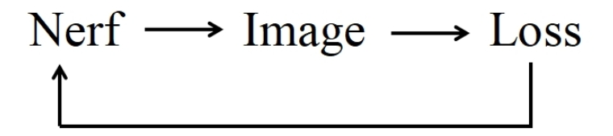
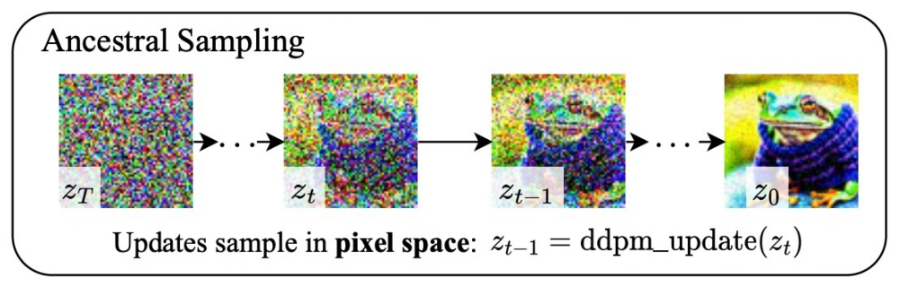
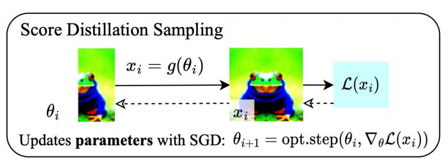
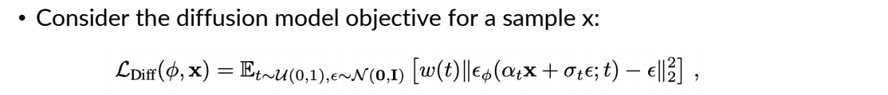
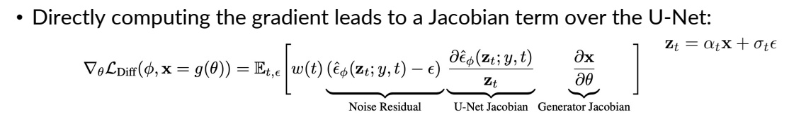
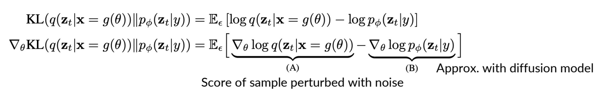
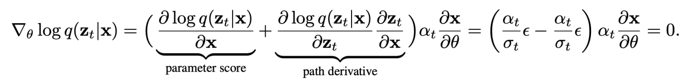
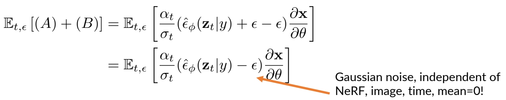
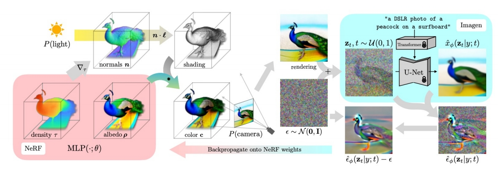

DreamFusion: Text-to-3D using 2D Diffusion
近期文本到图像生成领域的突破主要得益于基于数十亿图像-文本对训练的扩散模型。若将这种方法应用于三维合成，将需要大规模标注三维数据集及高效的三维去噪架构，而这两者目前均属空白。本研究通过使用预训练的二维文本到图像扩散模型，成功规避了这些限制，实现了文本到三维的合成。我们提出了一种基于概率密度蒸馏的损失函数，使得二维扩散模型能够作为参数化图像生成器的优化先验。通过将这种损失应用于类DeepDream优化流程，我们对随机初始化的三维模型（神经辐射场，NeRF）进行梯度下降优化，使其从任意角度渲染的二维图像均能获得较低的损失值。最终生成的文本对应三维模型支持多视角观看、任意光照重打光，并可合成到任何三维环境中。该方法无需三维训练数据，也无需修改图像扩散模型，证明了预训练图像扩散模型作为先验的有效性。更多三维成果的沉浸式展示请参见dreamfusion3d.github.io。
这是一篇开创性的论文，提出了一种无需3D训练数据、仅依赖预训练2D文本-图像扩散模型（如Imagen）生成高质量3D内容的方法。
研究背景与问题
任务
输入：文本 输出：Nerf参数
本文方法及优势
| 要解决的问题 | 当前方法及存在的问题 | 本文方法及优势 |
|---|---|---|
| 3D生成 | 传统3D生成依赖大规模标注的3D数据集，而这类数据稀缺且获取成本高 | 利用2D扩散模型的先验知识 绕过3D数据限制，实现开放域文本到3D的高效生成，同时支持多视角一致性和几何细节。 |
方法创新
Score Distillation Sampling（SDS）
SDS是论文的核心贡献，解决了如何通过2D扩散模型指导3D参数优化的难题：
- 原理：利用强大的2D图像生成模型作为“老师”或“裁判”，来指导一个3D模型的优化过程。具体来说，如果这个3D模型从任何角度渲染出的2D图片，都能被这个“裁判”判定为“高质量且符合文本描述”，那么这个3D模型本身就是一个好模型。
- 方法：将3D模型（如NeRF）的渲染图像视为扩散模型中的噪声样本，通过预测噪声残差计算梯度，反向传播优化3D参数。公式上省略U-Net的雅可比矩阵项，简化梯度计算：
流程
✅ 参数不在 2D 空间而是在 Nerf 空间，构成优化问题，通过更新 Nerf 参数来满足 loss.

flowchart LR
A[("输入: 文本提示 y")]
B([随机采样相机 c])
P([初始的3D参数 θ])
I([当前参数的渲染结果 x])
D([随机采样噪声强度 γ 和噪声 ε])
J([“加噪图片 zₜ ”])
K([“噪声 ε_Φ”])
L([“扩散模型 Φ”])
Loss([“SDS Loss”])
G([SDS梯度])
C[“渲染图片”]
E[“添加噪声”]
F[“扩散模型 Φ，预测噪声”]
A & B & P --> C --> I
I & D --> E --> J
J & L --> F --> K
K & D --> Loss --> G
G e1@-->P
e1@{ animation: fast }
如果 ε_Φ 和我们最初加入的噪声 ε 完全一样，说明渲染的图片 x 在扩散模型看来，已经非常像一张在 t 时刻的、关于 y 的“干净”图片了。这意味着3D模型已经学得很好，无需大改。
如果 ε_Φ 和 ε 不一样，那么这个差异 (ε_Φ - ε) 就构成了一个指导信号，它指出了“渲染图 x 应该朝哪个方向改变，才能更符合文本描述 y”。
计算梯度
SDS损失函数的梯度计算方式是整个方法最精妙的地方：
$$ \nabla_ \theta \mathcal{L}_ {\mathrm{SDS}} \propto \mathbb{E}_ {t, \epsilon} \left[ w(t)(\hat{\epsilon}_ \phi(\mathbf{z}_ t; y, t) - \epsilon) \frac{\partial \mathbf{x}}{\partial \theta} \right] $$
- (ε_Φ - ε)： 上文提到的指导信号，它是一个在图像空间（2D）的向量场。
- ∂x/∂θ： 渲染图片 x 对3D参数 θ 的梯度。这告诉我们，如果想让图片 x 发生微小改变，3D参数 θ 应该如何调整。
- w(t)： 一个依赖于时间步 t 的权重函数，用于平衡不同噪声水平下的指导强度。DreamFusion中发现，给中等 t 较高的权重效果更好，因为这些时间步包含了更多关于结构和语义的信息。
更新3D模型
我们不直接计算一个关于 (ε_Φ - ε) 的L2损失再求导，而是直接将这个差异通过渲染过程的梯度 ∂x/∂θ 反向传播到3D参数 θ 上。这相当于用扩散模型的预测来“拉动”3D模型，使其渲染的图片落入扩散模型认为的高概率区域。


$$ θ ← θ - η * \nabla_ \theta \mathcal{L}_ {\mathrm{SDS}} $$
SDS梯度的推导过程
✅ 由 (ε_Φ - ε) 的L2损失出发，得到公式1： 
✅ 由公式1对θ求导并省掉常系数，得到公式2：

由于\(x =g(\theta )\)，\(\frac{\partial L}{\partial \theta } =\frac{\partial L}{\partial x } \cdot \frac{\partial x }{\partial \theta } \)，其中 \(\frac{\partial L}{\partial x }\) 又分为第一项和第二项。
第二项：\( \partial \) Output／ \( \partial \) Input．这一项要计算 diffusion model 的梯度，成本非常高。
第三项：\( \partial \) Input Image／ \( \partial \) Nerf Angle
✅ 作者直接把公式 2 中的第二项去掉了，得到公式3，即为本文最终使用的 loss.
SDS 为什么有效？其优势与内涵
利用先验，绕过数据： 它完美地利用了在海量2D数据上预训练的扩散模型作为强大的视觉知识库，无需任何3D训练数据。
概率密度梯度： 从数学上看，SDS梯度实际上近似于渲染图像分布与扩散模型先验分布之间的KL散度的梯度。它是在最小化两个分布之间的差异。
解决Janus（多面）问题： 通过随机采样相机视角，SDS自然地从不同角度优化3D模型，鼓励其生成一个所有视角都一致的3D资产，从而缓解了“多脸问题”（一个头的前后左右都是脸）。
优化方式优于微调： 它不微调扩散模型本身，只是将其作为一个静态的“损失函数”。这避免了直接让扩散模型在陌生（如3D渲染的）图片上过拟合，保持了其强大的先验知识。
SDS 的局限性
颜色过饱和与细节缺失： SDS倾向于生成颜色鲜艳、平滑但缺乏高频细节的表面。这是因为损失函数在较高的噪声水平下平均化了细节。
“平均脸”问题： SDS优化的是分布的期望，这可能导致生成结果过于中庸，缺乏创造性的细节或风格。
收敛速度慢： 由于梯度方差较大，需要大量迭代才能得到高质量结果。
损失函数
Consider the KL term to minimize (given t):
$$ \mathbf{KL} (q(\mathbf{z} _ t|g(\theta );y,t)||p\phi (\mathbf{z} _ t;y,t)) $$
KL between noisy real image distribution and generated image distributions, conditioned on y!
KL and its gradient is defined as:

(B) can be derived from chain rule
$$
\nabla _ \theta \log p _ \phi (\mathbf{z} _ t|y)=s _ \phi (\mathbf{z} _ t|y)\frac{\partial \mathbf{z} _ t}{\partial \theta }=\alpha _ ts _ \phi (\mathbf{z} _ t|y)\frac{\partial \mathbf{x} }{\partial \theta } =-\frac{\alpha _ t}{\sigma _ t}\hat{\epsilon }_ \phi (\mathbf{z} _ t|y)\frac{\partial \mathbf{x} }{\partial \theta }
$$
(A) is the gradient of the entropy of the forward process with fixed variance = 0.
✅ A: the gradient of the entropy of the forward process。由于前向只是加噪，因此 A 是固定值，即 0.
✅ P27 和 P28 证明 P26 中的第二项可以不需要。
❓ KL 散度用来做什么？LOSS 里没有这一项。
✅ KL 用于度量 \(P(\mathbf{Z}_t｜t)\) 和 \(q(\mathbf{Z}_t｜t)\)．
✅ KL 第一项为 Nerf 的渲染结果加噪，KL 第二项为真实数据加噪。
$$ (A)+(B)= \frac{\alpha _ t}{\sigma _ t} \hat{\epsilon } _ \phi (\mathbf{z} _ t|y) \frac{\partial \mathbf{x} }{\partial \theta } $$
However, this objective can be quite noisy.
Alternatively, we can consider a “baseline” approach in reinforcement learning: add a component that has zero mean but reduces variance. Writing out (A) again:

Thus, we have:

This has the same mean, but reduced variance, as we train \(\hat{\epsilon } _ \phi\) to predict \(\epsilon\)
NeRF的改进与渲染策略
- 神经辐射场（NeRF）：采用mip-NeRF 360表示3D场景，参数化体积密度和反照率（颜色），支持光线追踪和视角一致性。
- 着色与几何增强：
- 法线计算：通过密度梯度估计表面法线，结合随机光照增强几何细节。
- 反照率随机替换：以一定概率将材质颜色替换为白色，防止模型退化为平面纹理（如将3D结构简化为2D贴图）。
- 背景合成：通过alpha混合避免相机近端密度堆积，提升场景合理性。
P29
DreamFusion in Text-to-3D
- SDS can be used to optimize a 3D representation, like NeRF.

✅ 左下：以相机视角为参数，推断出每个点的 Nerf 参数。
✅ 左上：从相机视角，生成 object 的投影。
✅ 左中：左上和左下结合，得到渲染图像。
✅ 生成随机噪声，对渲染图像加噪。
✅ 右上：使用 diffusion model 从加噪图像中恢复出原始图像。（包含多个 step）
✅ 右下：得到噪声，并与原始噪声求 loss.
✅ 根据 loss 反传梯度优化左下的 MLP.
3. 实验结果与贡献
- 高质量生成：能够生成多视角一致、支持任意光照和合成的3D模型，例如“冲浪板上的孔雀”等复杂场景。
- 零样本泛化：无需3D数据，仅依赖文本提示即可生成开放域3D内容，显著降低创作门槛。
- 与基线对比：相比基于CLIP的方法（如DreamFields），DreamFusion在几何准确性和视觉保真度上表现更优。
4. 局限性与改进方向
- 生成质量缺陷：SDS生成的3D模型存在过饱和、过平滑问题，且多样性受限（不同随机种子生成结果差异小）。
- 分辨率限制：依赖64×64的Imagen基础模型，细节层次不足（后续工作如Magic3D通过提升分辨率改进）。
- 效率问题：NeRF优化耗时较长，后续研究采用Instant-NGP等加速方案。
5. 后续影响与扩展
- 领域推动：DreamFusion成为文本到3D生成的基准方法，启发了SJC、VSD等改进算法。
- ProlificDreamer的突破：清华大学团队提出变分得分蒸馏（VSD），将3D参数建模为概率分布，解决了SDS的过平滑问题，并支持更高分辨率和多样性。
- 应用前景：在游戏、虚拟现实、数字孪生等领域具有潜力，推动AIGC从2D向3D扩展。
总结
DreamFusion通过结合2D扩散模型与NeRF，开创了无3D数据依赖的文本到3D生成范式。其核心创新SDS为后续研究奠定了基础，尽管存在生成质量限制，但通过算法优化（如VSD）和工程改进（如高效NeRF变体），这一方向正逐步走向实用化。